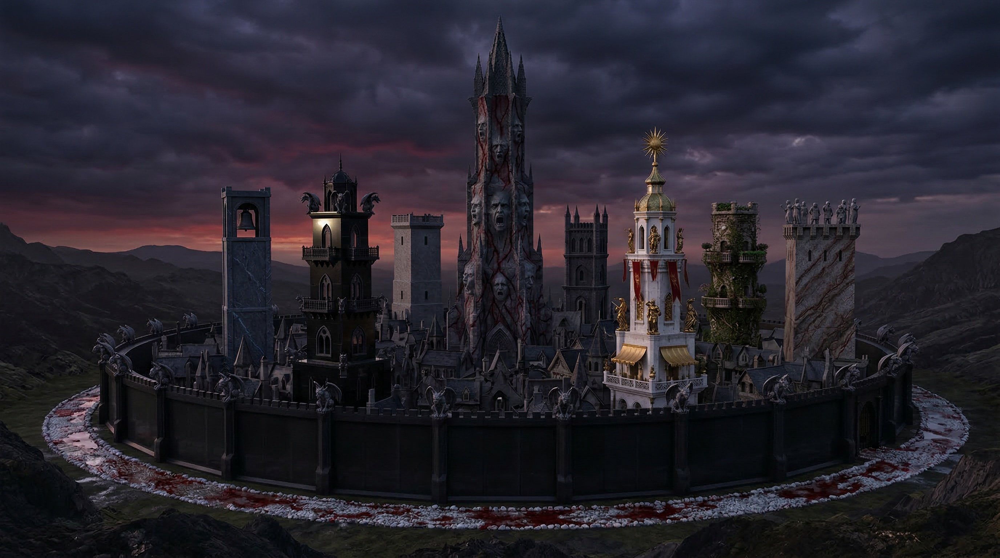

Chronicles of Ribhus
The Chronicles of Ribhus is a fully realised high fantasy setting of uncommon depth — a world that rewards curiosity, punishes complacency, and never mistakes spectacle for substance. It occupies the same tradition as the great pillars of the genre: the mythic grandeur of Tolkien's Middle-earth, the intricate cosmological architecture of Jordan's Wheel of Time, the unflinching political consequence of Martin's Westeros. It belongs in that company not through imitation, but through the same fundamental commitment — a world that existed before the story began, and will continue long after it ends.
Ribhus is a world of ancient powers in slow collision. Demon lords of elemental primacy. Dragon paragons whose influence bends civilisations across centuries. Mortal races who worship, resist, or attempt to bargain with forces that were old when their languages were young. A world where morality is complicated, history is contested, and the most dangerous entities are the ones absolutely certain of their righteousness.
At the heart of the setting lies the Heptaverse — a cosmological framework of seven primal elemental forces that shapes everything from the weather systems of continents to the bloodlines of divine creatures to the theological disputes of ancient cults. Every faction, every creature, every piece of history in the Chronicles is intelligible only in relation to those seven forces. Every spell cast is a theological statement. Every adventure is a thread in a tapestry that extends in every direction — and pulling it carefully matters.
This is a world built on the Ribhian Games 2d10 system — a ruleset designed alongside the setting, not bolted onto it. The mechanics reflect the world's nature. The world breathes life into the mechanics. They speak the same language, and that language is Ribhus.
The Children of Ribhus
The world of Ribhus cradles many peoples, each shaped by their ancestral lands, cosmic heritage, and the flow of the seven currents through their bloodlines. Five broad categories define the races of the setting — each with its own relationship to power, history, and fate.
⚒ Elder Races — Ancient peoples of deep memoryThe Paths of Power
All beings of Ribhus draw strength from three wellsprings — the Physical, the Mental, and the Karmic. Fifteen paths channel these forces, each a distinct tradition of power with its own philosophy, demands, and expression.
⚔ The Martial Path — Masters of the Physical CurrentsRune Stones of Ribhus
In Chronicles of Ribhus, the Fortune Pool takes physical form as Rune Stones — ancient carved tokens that channel the seven karmic currents of the world. Each stone carries a specific power that can be invoked when fate demands it.
Characters begin each scene with a number of Rune Stones determined by their Path. Stones are drawn, held, and spent — each one a reservoir of karmic potential. Rolling doubles on any 2d10 check restores 1 Rune Stone to your pool regardless of success or failure, and triggers an Oracle draw. Mystical Paths — Clergy, Shamans — access more stones and deeper manifestation abilities. Mundane Paths like Warriors access fewer but still benefit from their foundational effects.